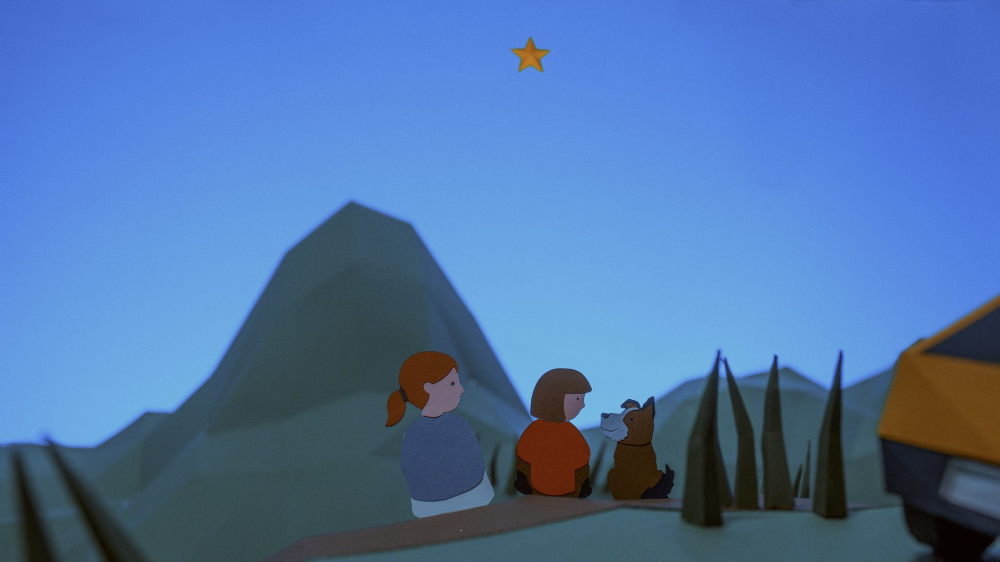
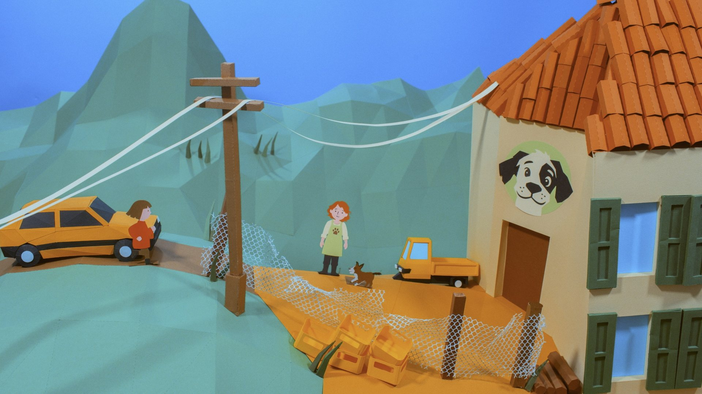
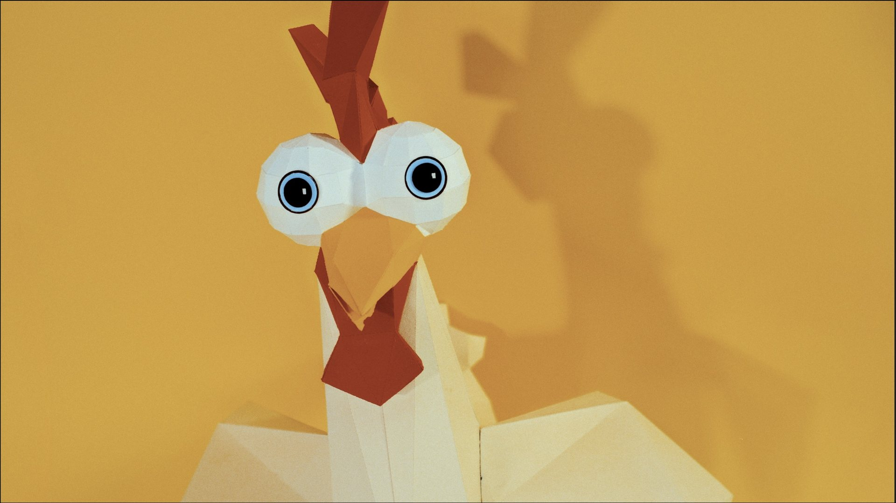
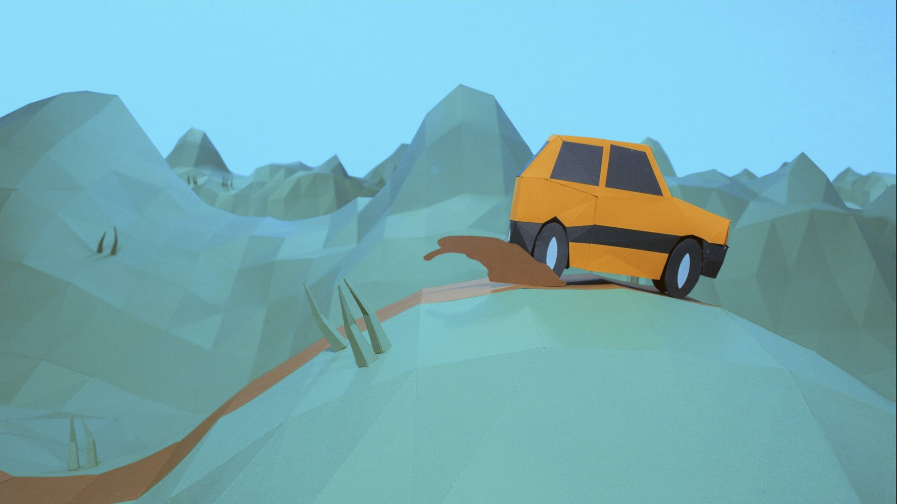
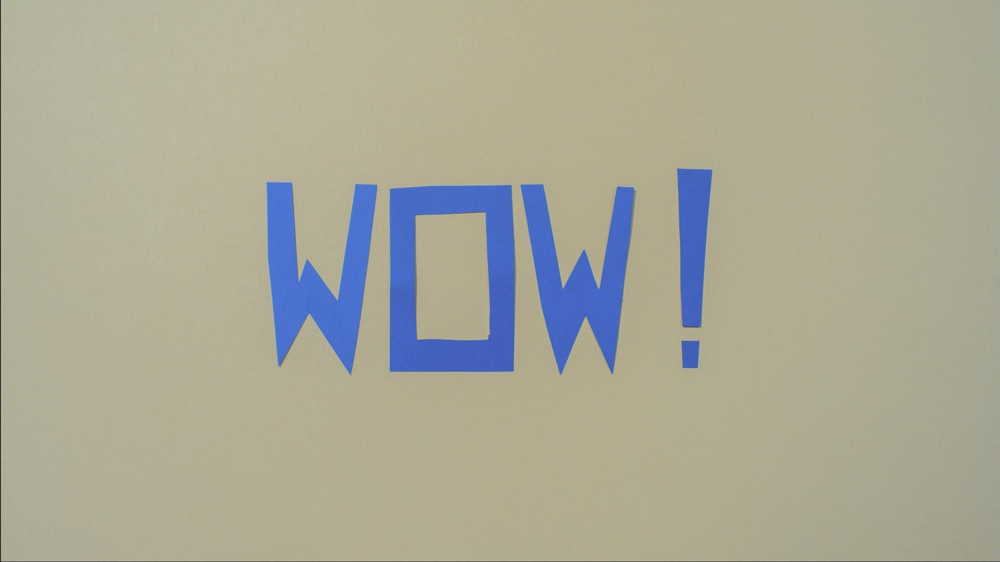

She searched for the stars all over the world. One was waiting at home.
A girl from the mountains builds an antenna out of tomato cans to find the real WOW! signal, the 72-second radio transmission picked up in 1977 and never heard again. Her search takes her to the deserts of the world, and teaches her that the most important answers are closer to home.
Paper-animated feature, 70–80 minutes · For families, children aged 8 and up, and adults





From the director of Spacetime Chronicles, selected at Annecy, Sitges and Fantasia 2026.